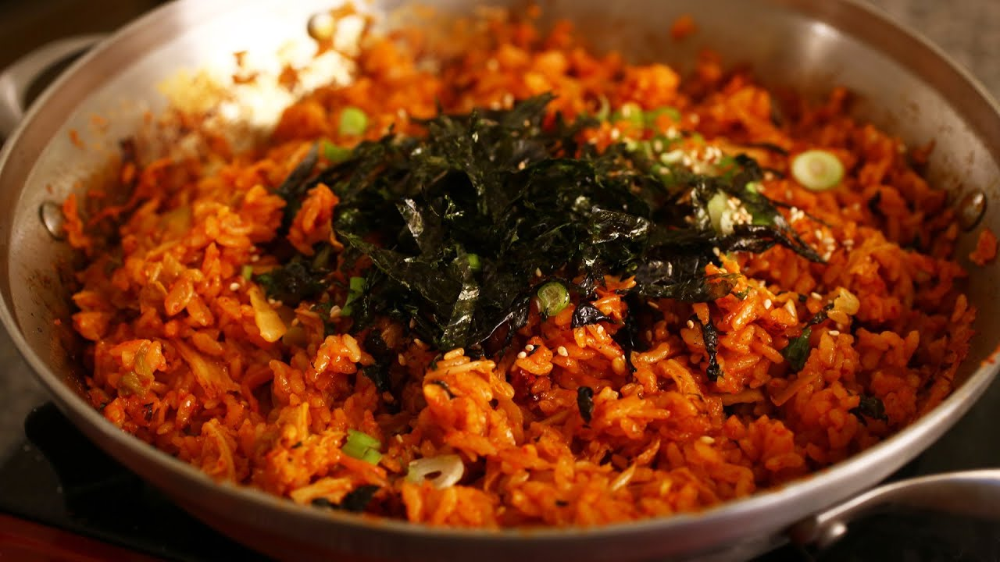

Kimchi Fried Rice

Kimchi Fried Rice Recipe
This recipe is one of my favorites to make because of a recipe trick my sister taught me that
involves preparing the same ingredients multiple ways all within one dish.
We'll use both fried and fresh kimchi, as well as roasted and freshly minced garlic, giving this dish high flavor complexity.
Ingredients
- 1.8 cups rice
- 8-10 garlic cloves
- 1 whole garlic bulb
- 10 oz of sliced bulgogi meat
- half an onion
- 10 oz kimchi
- 1 tbsp sesame oil
- 1 tbsp gochujang
- 1 tbsp gochugaru
- 1 tbsp kimchi juice
- 1 tbsp rice wine
- 1 tbsp fish sauce
- 1 stalk green onion
- 1 egg
Steps
- Cook meat with diced green onion until medium rare.
- Set meat aside and cook onion until half soft, add garlic to pan.
- Meanwhile, roast whole garlic bulb in oven at 400 degrees for 60 mins.
- Add cubed kimchi to garlic and onions.
- Add rice, sesame oil, gochujang, gochugaru, kimchi juice, rice wine, and fish sauce. Mix well.
- Make a hole in the center of the pan and mix an egg in, then add to rice
- Mix roasted garlic in. Top with seaweed and enjoy.